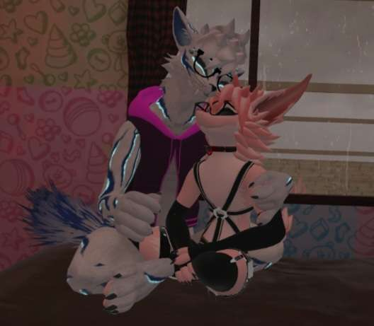

Krypt=River 09.09.2022

Hey my little Twinkie.
Honestly, there isnt much for me to say.
I always Tried to show how I felt about you as you deserve it so very much.
I always wanted to give you my everything as I adore you.
But Sometimes it doesn’t feel like enough but I know I have a whole lifetime to give so I don’t really mind.
(Yes I wanna give my whole life to you)
The first msg I ever sent you was how I truly felt~
(I tried so hard but,)
The point keeps on slipping away
Yesterday all my troubles seem so far away.
Now they seem far and forever and here to stay.
Where has everyone gone?
I’m alone again, lost in the dark, and have fallen away.
My point and my will have slipped away.
I’m tired and don’t want to be alone again.
I just want the light to find its way to me one last time,
Even if it’s just for a short time.
I don’t want to be alone . . .
Please,
Don’t leave here in the dark.
Wait . . .
Hello?
Who are you?
Where do you come from?
Oh, so your name Krypt.
Suddenly,
I wasn’t alone,
Even tho nobody knew where the blade was at he saved me from myself,
What is this?
He became my light, He unbroken the broken.
Is this what happiness feels like?
Suddenly the world became so bright,
My will the pieces to my shattered soul were put back together,
By my true and only partner,
Thank you,
My love.
My world did really became so bright
I know I didn’t really show it by me being depressed, but deep down I felt loved more than any other person could give.
You give me everything I could ask for and so I wanna give you the same~
I can't wait to turn 18 so I can hold you can give you all my love that I have been storing up
and the fact you can't wait either makes me so excited~
Mornin floofies, how does it make you feel knowing that we've gone half a year and that there's only just a year and 3 months
till your 18 and we'll be able to hold each other for the first time,
personally it makes me excited, and determined, cause on that day our lives will change and I'm determined
that everything will continue to be Alright.
I still dream of that day and continue to look forward to it, I love you so much, and I'm so very lucky that I met you
that one day in VrChat you've changed how I used to be,
and you've helped me which was more than I could've ever asked for,
I Love you so very much you're the one guy I hold very close to meand I'm never gonna stop doing that, happy 6 months Riv, I Love you
(Imagine if I put all that in pig latin, hehe you'd hate me for that, iay ovelay ouyay ivray osay eryvay uchmay)
Anyways~ To put everything simple
I love you my little puddle.